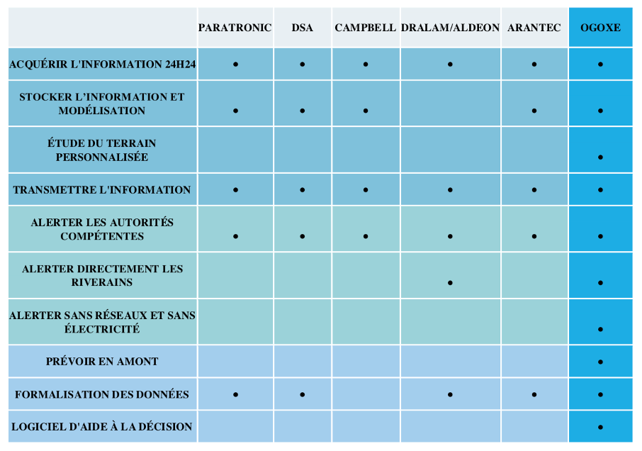

Entreprise Ogoxe
Présentation d'Ogoxe
Son histoire
OgoXe est une startup née suite aux inondations de 2013 dans les Hautes-Pyrénées, qui ont frappé la vallée du Bastan entraînant plusieurs morts et d’importants dégâts matériels. Depuis OGOXE est spécialisé dans les études environnementales, l’assistance et les solutions innovantes pour répondre, anticiper et alerter sur les risques et dangers environnementaux. Nos systèmes sont résilients et autonomes face à n’importe quel risque.
Ses aractéristiques
Ses Parties prenantes
Modèle économique d'Ogoxe
Ses produits
Ogoxe propose une gamme de produits :
- Floodix
- Les balises
- Ometrix
Ses services
Ogoxe propose une large gamme de services à ses clients :
- Etudes hydrologiques
- Bathymétrie
- Carte de zones inondables
- Modélisation hydrologique
- Mise à disposition de capteurs
Leur dépenses
Ogoxe lève aujourd'hui 500 000€ (dont 250k€ en equity) afin de déployer la solution à l'échelle nationale, de commencer la commercialisation en Espagne et en Italie et enfin de poser les bases d'une diversification de ses solutions
Leur recettes
Grâce à sa solution, Ogoxe a engengré un total de plus de 1M de chiffres d'affaires depuis sa création.
Son modèle adopté
Le modèle actuel d'Ogoxe repose sur un système d'abonnement : de 0,99€ à 39,9€/mois. En plus de cela sont rajouté les frais d'installations des produits compris entre 100 et 1 000€
Ce nouveau modèle économique est plus efficient pour plusieurs raisons :
- Récurrence et une meilleure marge globale par client ;
- Réduction du cycle de vente client : de 8 mois à 2 mois ;
- Moins de friction sur les renouvellements de contrats ;
- Solution clé en main : plus simple à gérer pour les clients ;
- Possibilité de mettre plusieurs clients par capteurs. Le modèle devient de plus en plus rentable à mesure qu'il y a de clients sur le même périmétre autour des capteurs ;
- Possibilité d'utiliser la donnée puisque Ogoxe reste propriétaire des capteurs.
Etude de leur chaine de valeur
- Le développement/conception : Ogoxe développe et déploie une solution complète et intégrée pour protéger la population contre les risques naturels, à commencer par celui des inondations.
Cette solution, appelée IFAFS (pour IoT Flood Alert and Forecasting Solution - Solution connectée d'alerte et de prévention des crues), repose sur la combinaison de :
- Capteurs connectés disséminés sur les territoires à risque
- L'agrégation de données publiques (météo, vigicrues, ...)
- Un logiciel d'information et d'aide à la prise de décision
- Boîtier Floodix, objet connecté pour informer, alerter et prévenir en toute situation.
- La commercialisation : La solution est commercialisée depuis 2017 et a permis à Ogoxe d'engranger environ 400k€ de chiffre d'affaires pour 39 contrats signés depuis son lancement. Parmi les adopteurs de la solution se trouvent des collectivités, des campings, des particuliers, des entreprises et grands groupes tels que EDF (barrage et centrales hydro), potentiel partenaire pour sa commercialisation.
- La vente et le marketing : Ogoxe adresse ses offres à la fois aux collectivités, aux particuliers(BtoB) et aux entreprises(BtoC).
- Services : Ogoxe met à disposition de ces clients une solution complète permettant la prévention et l’alerte des risques d'inondation. Ses solutions connectées et intelligentes permettent d'identifier, prévenir et alerter les populations des risques, et ce même en cas de coupure des réseaux électriques et télécoms.
Les activités secondaires
- Les infrastructures de l’entreprise : ce sont les services essentiels (administratif, comptable, contrôle de gestion, financier…),
- Les ressources humaines : c’est le service qui assure la gestion du personnel et sa coordination,
- La recherche et le développement : ce sont des services qui mobilisent un certain savoir-faire et une capacité à innover,
- Les achats : c’est le processus qui permet à l’entreprise d’acquérir les ressources nécessaires pour produire.
Outils de diagnostic externes et internes:
Analyse des forces concurrentielles
Ces acteurs proposent des capteurs et des solutions de prévisions, dans un modèle proche de celui d'Ogoxe :
- Arantec (Espagne)
- DHI (Danemark)
- DSA (France)
- OTT Hydromet (Allemagne/France)
- Paratonic (France)
Parmi ces acteurs, aucun n'est en capacité de gérer l'ensemble des étapes du risque d'inondation, c'est-à-dire avant, pendant et après, à l'instar d'Ogoxe. Peu également s'adressent conjointement à tous les acteurs concernés : les collectivités publiques, les entreprises et les particuliers, comme le propose Ogoxe.

Analyse PESTEL
Politque
- Le système de communication et de prévention fait perdre beaucoup de temps aux autorités. En effet, il est souvent trop tard pour prévenir les risques de façon efficace. D’autant plus que Vigicrue ne couvre pas tout le territoire. Aujourd’hui, seulement 1 cours d’eau sur 5 est surveillé en France.
- Initiative GreenTech en France et Europe
Economique
- L'etat accorde des subventions aux entreprises impliqué dans l'économie verte
- Crowfunding sur le site Sowefund pour permettre aux internautes de soutenir la startup
Socioculturel
- Concurrence en tous points inférieure en terme de qualité de produits et de services
Technologique
- Technologie haut des gammes des capteurs de surveillance
Ecologie
- modèles météorologiques pas toujours fiables, ce qui rend la prévention d’autant plus complexe.
- Les crues restent donc des phénomènes relativement durs à anticiper du fait aussi de la complexité des facteurs qu’elles impliquent : précipitations, absorption des sols, humidité ou forme et géométrie de la rivière
Legal
- Une nouvelle loi portant sur la Gestion des milieux aquatiques et prévention des inondations indique que les autorités locales peuvent faire appel à leur budget général et/ou prélever une taxe supplémentaire pour financer la prévention des inondations.
Comparaison entre ces entreprises
Présentation
Histoire
Ogoxe a été crée en 2013 suite à aux inondations tandis que Waves'n See a été fondée en 2015 sans évenement décisif incitant sa création.
La première est spécialisé dans les études environnementales, la seconde et quant à elle est issue de la recherche publique, aillant pour but de localiser les déficits de sédiments.
Caractéristiques
Parties prenantes
Modèle économique
Les produits
Les services
Présentation des dépenses
Présentation des recettes
Modèle adopté
Entreprise Waves'n See
Fondée par deux océanographes en 2015, Waves’n See est une startup issue de la recherche publique. Nous développons une technologie issue des recherches de l’IRD en matière de télédétection. L’IRD nous a accompagnés dans le projet de création via sa cellule de transfert et valorisation de la technologie.